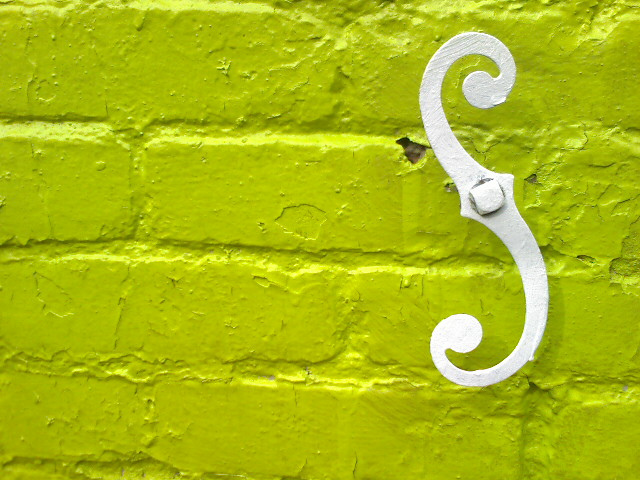
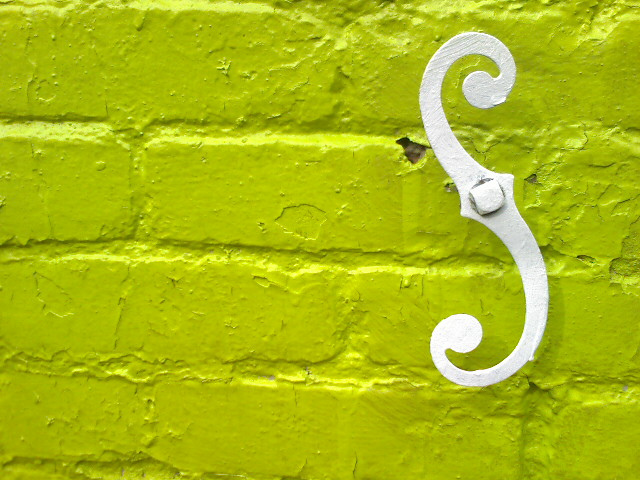
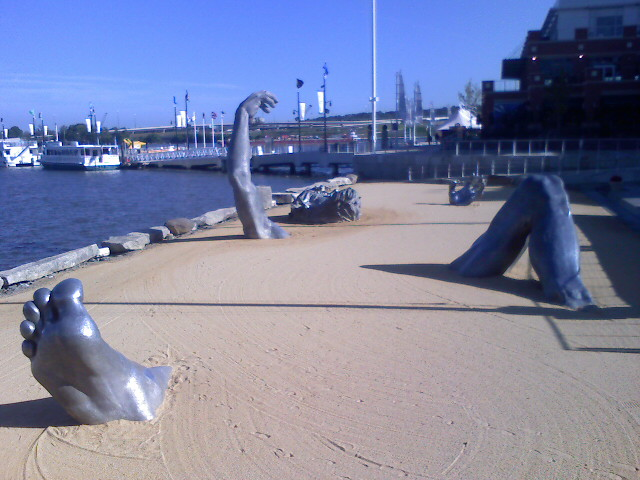
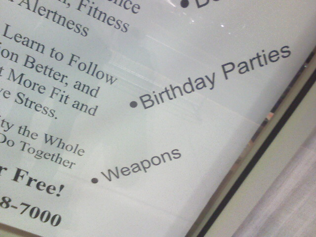

Wall Decoration

Snap Crepes on Thomas Jefferson street in Georgetown is painted bright green. I’ve been meaning to get a picture of these white wall decorations against the bright background and I had time this morning to finally do it.


Snap Crepes on Thomas Jefferson street in Georgetown is painted bright green. I’ve been meaning to get a picture of these white wall decorations against the bright background and I had time this morning to finally do it.
The newest gadget/technology site to hit the web is Obsessable.com, which launched earlier today. Now you might be thinking “Who needs another gadget blog?” but it is more than just the latest news. Obsessable aims to be the resource for consumer electronics covering news, reviews, and detailed product information. It’s like a blog/product database for all your mobile, imaging, home a/v, computing, and gaming needs.
Probably my favorite feature is the Comparators. Like the name implies the Comparator lets you compare several products side by side through a slick, scrolling interface that is jam packed with vital stats. The first example of this thing in action is for 6 HDTV’s. You can add or subtract groups of stats that you care about. In the case of the HDTV’s that would be things like data connectivity and physical specifications. After finishing constructing a table of all the data you want it would be nice to be able to print it out so you can take it with you to a store. I’m sure this feature is coming.
The team consists of many former Weblogs Inc. writers. Evan Blass and Barb Dybwad formerly from Engadget, Emily Price from Download Squad, and Randall Bennett who I use to do a podcast with over at DVGuru.com. These are just some of the names I recognize from the Obsessable’s staff roster.
Obsessable is clearly aiming to be a top contender in the personal gadget space that is already ruled by Engadget and Gizmodo. There is also the as of yet unannounced site gdgt from the masterminds behind the top gadget blogs Ryan Block and Peter Rojas. But in the world of gadgets, many sites can co-exist. In fact it makes gadget reporting better because every site keeps the others in check.
I can see Obsessable is only at the begininng and can’t wait to see what else it has in store.
Visiting the marina at the National Harbor. This old vessel was docked and giving free tours of the deck.

At the National Harbor again this weekend and made it down to the waterfront. This guy is big enough to climb on.

Two weeks ago Nikon launched the first DSLR with video capabilities. But today Canon unveiled the 5D Mark II, a worthy competitor. The 21.1 megapixel successor to the 5D includes the ability to shoot 30 progressive frames per second with 1,080 vertical lines per frame. Video nerds call this 1080p30. What this means for the rest of us is the 5D Mark II becomes an effective HD media acquisition tool for both pictures and video.
Canon has a sample gallery with 8 videos resized for the web. Full resolution video clips from the Canon 5D Mark II are also available for download.
The table below outlines the video differences between the two cameras.
| Canon 5D Mark II | Nikon D90 | |
|---|---|---|
| Resolution | 1920×1080 | 1280×720 |
| Frame Rate | 30p | 24p |
| Video Format | MOV(H.264) | AVI (MJPEG) |
| Max Recording at full resolution | 12 minutes | 5 minutes |
| Microphone Input | 1/8" mono jack | None |
The biggest thing that makes the 5D Mark II better for video over the D90 is the microphone input. The mic input is big for people that want to record sound from something other than the on board microphone. It might not be an XLR input, which all of the professional gear uses, but it is still nice to have the option.
While most prosumer media gurus will be excited about the 1080p abilities of the Canon 5D Mark II, indy filmmakers like Stu Maschwitz are adamantly upset about the lack of 24p. Shooting video at 24 frames per second produces a look that is more filmic and less harsh compared to the TV standard 30 frames per second as well as making it easier to transfer to film for cinema distribution. I see Canon targeting the 5D Mark II video features at the web video crowd who want to capture the best photos and videos from a single device. This is more like TV news gathering than artsy, indy filmmakers.
But I see no reason why Canon couldn’t introduce a new firmware update that gives a new option for 24p recording since it is certainly feasible technically.
The new camera is set to go on sale at the end of November for $2,700. The Nikon D90 will hit the market at the end of September for less than $1,300. Until then you can read about every single minute detail from DPReview’s hands on preview of both the Canon 5D Mark II and the Nikon D90.

With e-mail replacing letters and the web providing an easy way to pay bills, I’ve found no need to buy stamps. So when the rare occasion arrives when I need to mail something off with a stamp, I’m clueless as to what they actually cost. Thankfully there is HowMuchiIsAStamp.com, which like the name says, tells you how much a US postage stamp costs. Stamps cost 42 cents now!?!? When did that happen?

It seems like just yesterday I was telling you guys about SocialDevCamp East. But the other day I got word that the 2nd DC area BarCamp is happening on Saturday, October 18th. This time it will be at the Center for Digital Imaging Arts at Boston University in Georgetown. Why there is a Boston University in DC is beyond me. But lucky for me, the conference is right across the street from my work so I’ll be familiar with the area.
Last year’s BarCamp was the first technology conference I had ever been to and I had a great time meeting other like-minded web folks like myself. I gave a presentation about Firebug which was pretty much by the seat of my pants. This time I hope to present again except this time around I will come better prepared.
I hope to see you there on October 18th for BarCamp DC 2! More details can be found at the official website and wiki.
Center for Digital Imaging Arts at Boston University
1055 Thomas Jefferson Street NW
Washington, DC 20007

Only at a martial arts center do these two things co-exist.
Walking home when this scene caught my eye. Looking forward to a nice relaxing weekend.